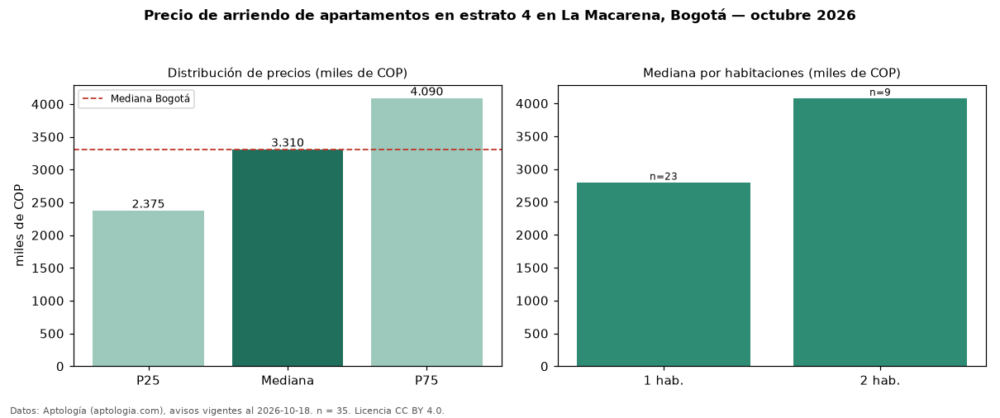

Precio de arriendo de apartamentos en estrato 4 en La Macarena, Bogotá — octubre 2026
Con 35 avisos vigentes, el canon mediano de apartamentos en estrato 4 en arriendo en La Macarena, Bogotá es COP 3,31 millones al mes. Eso es 8 % más que la mediana de toda la vivienda de estrato 4 de La Macarena (COP 3,08 millones, n = 51); este segmento reúne el 69 % de esos avisos. Por metro cuadrado, la mediana es COP 63.750/m² al mes (n = 35), 2 % por debajo del conjunto de referencia (COP 65.217/m²). El área mediana anunciada es 50 m². El segmento con más oferta es el de 1 habitación (23 avisos, mediana COP 2,80 millones); pasar de 1 habitación a 2 habitaciones cambia la mediana +46 %. La administración mediana declarada es COP 550.000 al mes (n = 18), aparte del canon. La mitad central de los avisos va de COP 2,38 millones a COP 4,09 millones (razón 1,7), una dispersión moderada. La mediana de todos los apartamentos en arriendo de Bogotá es COP 3,30 millones (+0 % de diferencia). Datos: Aptología (aptologia.com), CC BY 4.0 — https://www.aptologia.com/arriendo/bogota/la-macarena. Archivos: PDF, CSV con las cifras y gráfica PNG.

| Avisos únicos | 35 |
|---|---|
| Percentil 25 | COP 2.375.000 |
| Mediana | COP 3.310.000 |
| Percentil 75 | COP 4.090.000 |
| Mediana por m² | COP 63.750 |
Fuente: avisos vigentes de portales inmobiliarios recopilados por Aptología, deduplicados (mínimo 30 avisos únicos por celda). Precios pedidos, no cerrados. Fecha: 2026-10-18.